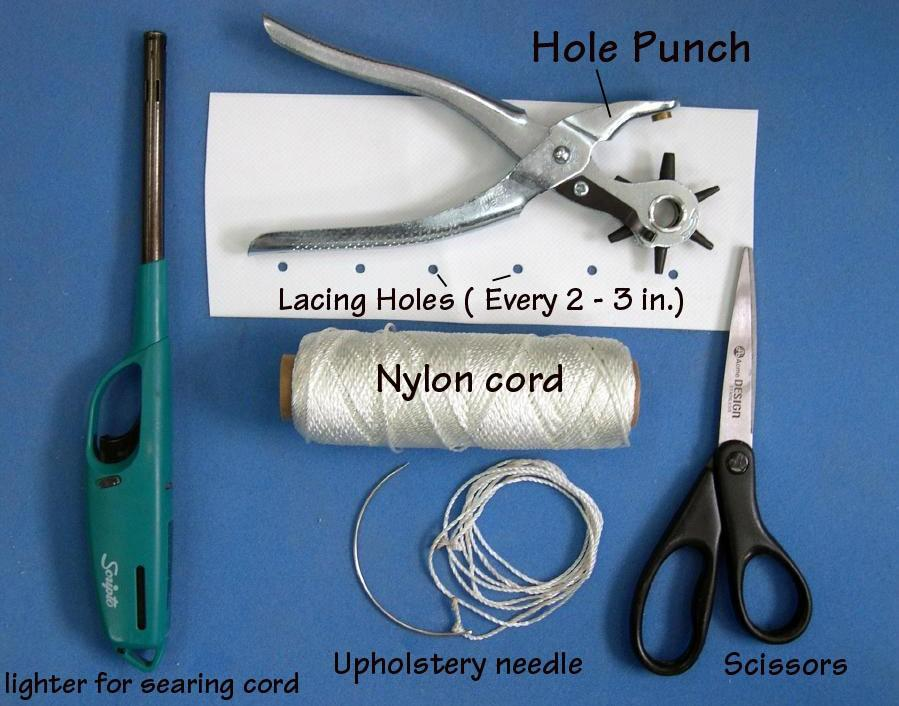

| Temporary Lacing | Menu Last Page Next Page |
|

Lacing - Temporary lacing is used to attach and tighten the hull skin to the frame. The lacing holds the skin in place until the deck is atached. After the zipper is installed, and the skin cut open, the lacing will be removed.
|
|